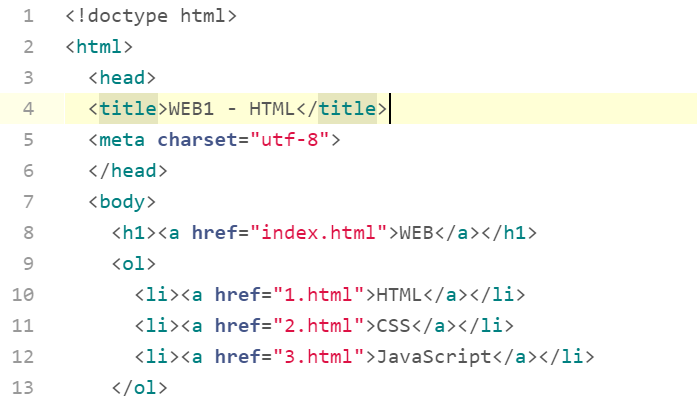
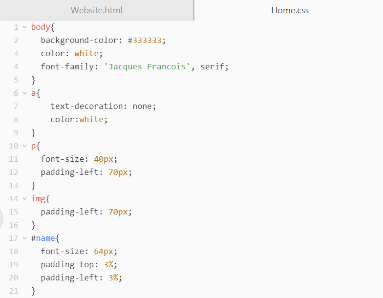
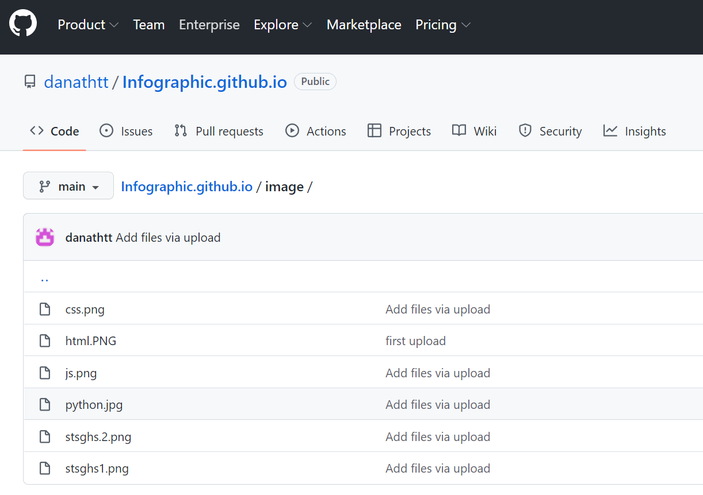
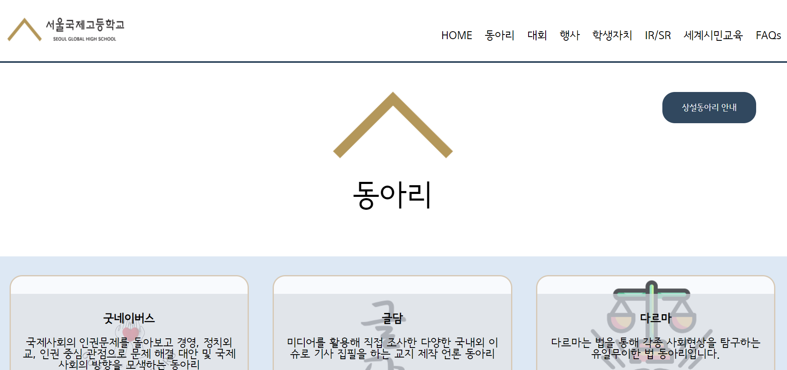

HTML은 웹사이트의 내용과 토대를 코딩하는 언어이다. 코드가 굉장히 직관적이고 쉬워서 코딩을 처음 시작할 때 접해보면 코딩에 대한 좋은 기억으로 시작할 수 있을 것이다.
CSS는 HTML로 짜여진 내용들을 배치하고 스타일을 입히는 코딩 언어이다. 원래는 CSS가 없이 HTML만으로도 스타일을 입혔지만 너무 복잡해 보여서 CSS라는 언어를 따로 만들어 HTML은 웹사이트의 내용을, CSS는 웹사이트의 스타일을 나타내게 분화되었다. 모든 코딩의 핵심은 간단하고 보기 쉽고 짧게 만드는 것이기 때문에 HTML을 HTML과 CSS로 나눈 것은 굉장히 코딩스러운 생각이다.
JavaScript(JS)는 웹사이트와 접속자가 상호소통할 수 있게 해주는 코딩 언어다. 익히는
측면에서는 사실 좀 쉬웠던 HTML이나 CSS보다 어렵다. 코드가 상당히 Python의 그 것과 비슷하고
짤 때 생각을 좀 많이 해야된다. JS는 코드 자체로 좀 길다.
웹사이트와 접속자를 상호소통하게
해준다는 것이 글로만 보면 무슨 뜻인지 잘 이해가 안 될 것 같은데, 쉽게 설명하자면 접속자가 어떤 버튼을
눌렀을 때 웹사이트가 그 자극에 맞춰 변화하는 코드라는 뜻이다. 예시로 웹사이트의 light mode/dark mode가
있다. 디폴트 값이 light mode였던 웹사이트에서 dark mode 버튼을 누르면 웹사이트가 어둡게 색 반전이 되는 것
, 그것이 웹사이트와 사용자 간의 상호 작용이다. 그걸 가능하게 하는 것이 JS 코드고. JS는 올해 겨울 방학 때 공부를 좀 했었는데
아직까지도 배울 게 많다. 중간고사 끝나고 시간이 좀 나기 시작하면 JS 공부를 다시 시작할 예정이다!
코드를 올리고 퍼블리시할 수 있게 해줌! 퍼블리시 기능 외에도 많은 기능들을 제공하여 개발자들에게 필수적인 사이트
stsghs.kr은 서울국제고의 학생 웹사이트로 나와 13기 선배분들이 함께 개발하였다. 작년에
코딩 자율동아리 Developers에 들어가서 처음 코딩을 배우고 시작한 대형 프로젝트다. 내가 배웠던
HTML과 CSS 코드를 메인으로 웹사이트의 코드를 짰다.

stsghs.kr은 내가 생각했던 것보다도
훨씬 큰 프로젝트였다. 시간도 꽤나 많이 들었지만 그보다 배운 것은 더 많았던 것 같다.
일차적으로는 학습만 했던 코딩을 실제 실무에 적용해보며 실력을 키웠고, 이차적으로는 학생 웹사이트에
들어갈 내용을 전달 받으며 전교임원단, 학생회, 선생님들, 그리고 동아리 부차장들과 지속적으로 소통하며
주워 읽은 것들이 학교 전반을 파악할 수 있게 해주었다고 생각한다(필수가 아닌 대의원회도 꿋꿋이 참여하며
학교에 관심있는 나에게 이러한 정보들은 so good). 그리고 가장 중요한 점은, 내가 코딩과 같은 새로운
분야에 도전하고 유의미한 결과를 이끌어 낼 수 있다는 것을 배웠다는 점이다. 고등학교 1학년 때 처음으로
코딩을 시작한만큼 엄청 늦었지만 누구보다 열심히 참여하고 즐긴 것이 내가 코딩이라는 새로운 학문에서도
좋은 결과를 얻을 수 있었던 이유인 것 같다. 이 코딩 경험을 바탕으로 내가 원하기만 한다면 새로운
내가 아예 처음인 분야, 학문이라고 해도 서슴없이 일단 해버리는 도전 정신을 얻게 되었다. 그 점에서
나는 코딩에게 정말 감사한다.
새로 하는 학급 단위 프로젝트! 윤채가 웹디자인과 코딩 보조를 해줬고 메인 코드는 내가 짜보았다. 개인적인 시간을 많이 쏟아서 한 프로젝트지만 그만큼 배우고 성장한 게 많다고 느꼈다. 모바일 전용 웹사이트(CLICK!)도 따로 만들어서 더 많은 유입을 장려했다.